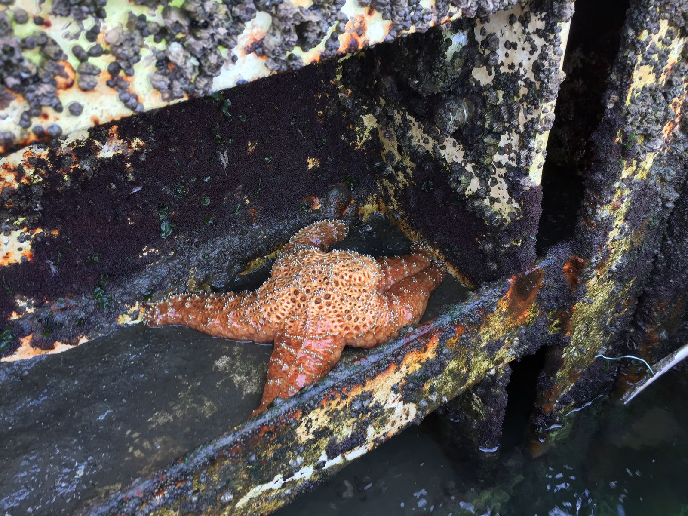

Elkhorn Slough at Moss Landing
I passed out around 10 last night, after a long day in Monterey, sleeping like a rock well past my alarm that was set for 7:30 in the morning. It turns out that the afternoon sun did a number on me. Setting off for Moss Landing just before noon, I stopped for a delicious and filling lunch at the Haute Enchilada Café.
When I got to Kayak Connection, I learned that due to a scheduling error, I was getting a solo tour, which they typically can't do. My guide was Bonnie, a college student who has been giving these tours for the past two and a half years while also working at the Monterey aquarium. She loved all of the wildlife we saw on the three hour tour and was knowledgeable about the animals, plants, and location.
The highlight animals on the tour were the harbor seals, sea lions, and otters. We saw some very tiny seal pups, which I learned are black when they are born and slowly get lighter. Since seals don't sweat, they release toxins into their skin which they molt annually. Some of these toxins are iron (from sea urchin in their diet), which cause their fur to turn red before molting. That was our way to identify how old the baby seal pups were. One was being very vocal on the shore and none of the adult seals around it could figure out why.
There were also many otter babies on their mothers' stomachs floating on the water. These otters spend most of their day eating, as they need to consume a ton of calories to keep on weight and maintain body temperature. In addition to these majestic baby animals, we saw starfish, snails, seagulls (which a friend recently told me is a combination of sea + eagle, but I believe he is mistaken), terns, cormorants (whose necks are turning bright blue for mating season), a loon, godwits, and several other birds whose names I have already forgotten.
You might wonder why I haven't included any pictures to this point. California state law requires that people stay at least 150 feet away from these animals, and I really learned the limits of the iPhone 6 camera digital zoom. The only good fish I got was of a starfish, who I learned was infected with a bad starfish virus.

After the kayak tour ended, I went to Santa Cruz to get some ice cream at the Penny Ice Creamery. I stayed in Santa Cruz for less than thirty minutes. Maybe it was just the part I was in, but it didn't feel very welcoming. After finishing my ice cream, I headed north to San José, where I am staying with a friend's parents for the next two nights. They made teriyaki salmon for dinner—yes I ate ice cream before dinner—and we talked until late into the evening.

I'm not sure what tomorrow has in store for me, but I do know that I will end my day by getting an ice cream sandwich with college friends at Cream nearby Stanford.